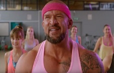

Jakie stawiam przed sobą cele?
Cel mam bardzo sprecyzowany: zostać Juniorem w połowie 2020 roku, mam więlką nadzieję, że mi się uda, nieee, ja wiem, że mi się uda! Do tego czasu chciałabym zrobić 3 projekty: stonę mojej koleżanki, która jest księgową, stronę dla kolejnej koleżanki, która prowadzi własny biznes związany z hafciarstwem oraz własną stronę powiązaną z playlistą dziecięcych hitów.
Kiedy wpadają mi do głowy ciekawe pomysły?
 Zazwyczaj podczas zajęć zumby, ale też czasami pod prysznicem. To właśnie pod prysznicem w kwierniu roku 2019 powiedziałam sobie, że zostanę programistką, trochę późno, ale przecież dopiedo 1/3 życia za mną, jeszcze 1/3 muszę popracować, żeby w ostatniej 1/3 żyć godnie na emeryturze, ale nadal z lapkiem na kolanach mam nadzieję :D